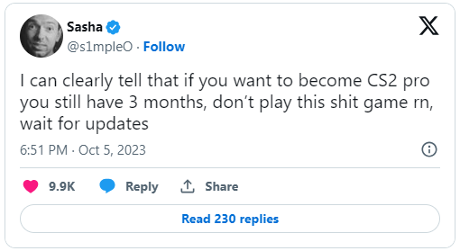

« Ne jouez pas à ce jeu de merde », s1mple tacle Valve et Counter-Strike 2
Alors que Counter-Strike 2 est officiellement sorti depuis pratiquement un mois, s1mple – toujours considéré comme le meilleur joueur du monde – semble encore avoir des préoccupations vis-à-vis du jeu et de Valve, et il semblerait que les développeurs l’aient contacté pour discuter de ses commentaires cette semaine. D’après les dires de l’Ukrainien, il aurait initialement réagi avec sarcasme en demandant « Quel est le problème ? », invitant par la même occasion Valve à prendre en considération les opinions d’autres joueurs professionnels sur la question. « Quand ils m’ont envoyé le tweet que j’avais publié, me demandant ce qui n’allait pas, vous savez ce que j’ai fait ? Je n’ai jamais répondu. Comment peuvent-ils me demander quel est le problème alors que toute la sphère Internet en discute ? », a lancé s1mple lors d’un live sur Twitch.
Le tweet d’origine que Valve lui a envoyé portait sur l’état du jeu, le vétéran de Counter-Strike avertissant les joueurs de ne pas se lancer dans CS2 pour le moment et de patienter jusqu’aux prochaines mises à jour : « Je peux clairement affirmer que si vous envisagez de devenir un pro de CS2, il vous reste encore trois mois. Ne jouez pas à ce jeu de merde, attendez les mises à jour », avait-il publié sur X (anciennement Twitter).

Rappelons le palmarès de sa carrière sur CSGO pour appuyer ses propos
Palmarès de S1mple
| Date | Placement | Tier | Type | Tournament | Team | Résultat | Prix |
|---|---|---|---|---|---|---|---|
| 2022-06-19 | 1st | S-Tier | Offline | BLAST Premier: Spring Finals 2022 | Natus Vincere | 2 : 0 | $200,000 |
| 2021-12-19 | 1st | S-Tier | Offline | BLAST Premier: World Final 2021 | Natus Vincere | 2 : 1 | $500,000 |
| 2021-11-28 | 1st | S-Tier | Offline | BLAST Premier: Fall Finals 2021 | Natus Vincere | 2 : 1 | $225,000 |
| 2021-11-07 | 1st | S-Tier | Offline | PGL Major Stockholm 2021 | Natus Vincere | 2 : 0 | $1,000,000 |
| 2021-09-12 | 1st | S-Tier | Online | ESL Pro League Season 14 | Natus Vincere | 3 : 2 | $195,000 |
| 2021-09-12 | 1st | Points | Online/Offline | Intel Grand Slam Season 3 | Natus Vincere | 4/4/0 | $1,000,000 |
| 2021-07-18 | 1st | S-Tier | Offline | Intel Extreme Masters XVI - Cologne | Natus Vincere | 3 : 0 | $400,000 |
| 2021-01-24 | 1st | S-Tier | Online | BLAST Premier: Global Final 2020 | Natus Vincere | 2 : 0 | $600,000 |
| 2020-03-01 | 1st | S-Tier | Offline | Intel Extreme Masters XIV - World Championship | Natus Vincere | 3 : 0 | $250,000 |
| 2019-04-07 | 1st | S-Tier | Offline | StarSeries & i-League CS:GO Season 7 | Natus Vincere | 3 : 0 | $250,000 | 2019-04-07 | 1st | S-Tier | Offline | StarSeries & i-League CS:GO Season 7 | Natus Vincere | 3 : 0 | $250,000 |
Commentaires